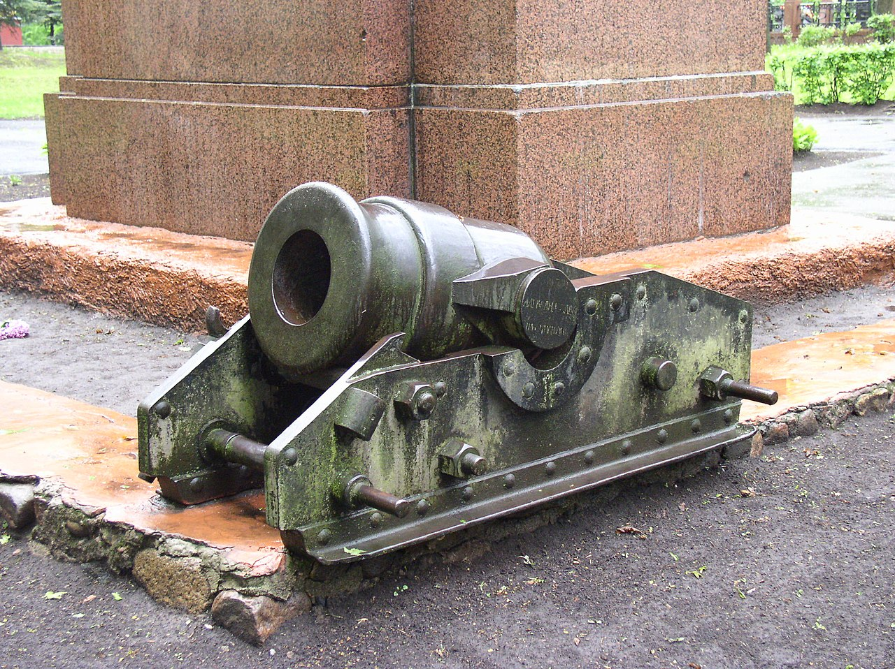

<a href="https://ja.wikipedia.org/wiki/%E3%83%88%E3%83%A9%E3%83%8B%E3%82%AA%E3%83%B3#/media/%E3%83%95%E3%82%A1%E3%82%A4%E3%83%AB:Belarus-Vitsebsk-Monument_to_Heroes_of_Patriotic_War_of_1812-6.jpg">砲耳は砲身両側面の突起であり、砲架の上に載せられる。</a> © 2006 by <a href="https://creativecommons.org">Alex Zelenko</a> is licensed under <a href="https://creativecommons.org/licenses/by-sa/4.0/">CC BY-SA 4.0</a>
